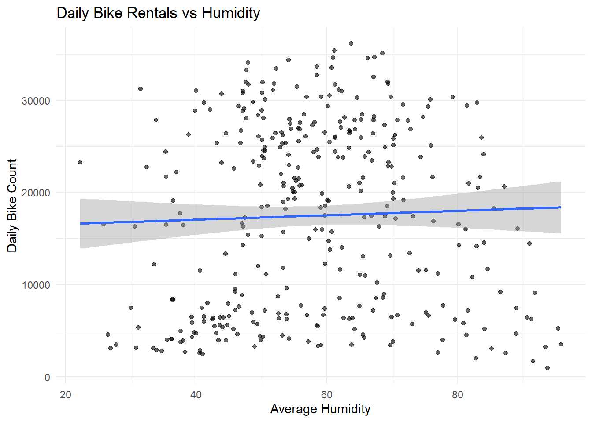

Rows: 8760 Columns: 14
── Column specification ────────────────────────────────────────────────────────
Delimiter: ","
chr (4): Date, Seasons, Holiday, Functioning Day
dbl (10): Rented Bike Count, Hour, Temperature(°C), Humidity(%), Wind speed ...
ℹ Use `spec()` to retrieve the full column specification for this data.
ℹ Specify the column types or set `show_col_types = FALSE` to quiet this message.
EDA
First, we will check for any missing values.
colSums(is.na(bike_data))
Date Rented Bike Count Hour
0 0 0
Temperature(°C) Humidity(%) Wind speed (m/s)
0 0 0
Visibility (10m) Dew point temperature(°C) Solar Radiation (MJ/m2)
0 0 0
Rainfall(mm) Snowfall (cm) Seasons
0 0 0
Holiday Functioning Day
0 0
No missing values! We are ready to proceed.
Begin with str() and summary() to examine variables
Date Rented Bike Count Hour Temperature(°C)
Length:8760 Min. : 0.0 Min. : 0.00 Min. :-17.80
Class :character 1st Qu.: 191.0 1st Qu.: 5.75 1st Qu.: 3.50
Mode :character Median : 504.5 Median :11.50 Median : 13.70
Mean : 704.6 Mean :11.50 Mean : 12.88
3rd Qu.:1065.2 3rd Qu.:17.25 3rd Qu.: 22.50
Max. :3556.0 Max. :23.00 Max. : 39.40
Humidity(%) Wind speed (m/s) Visibility (10m) Dew point temperature(°C)
Min. : 0.00 Min. :0.000 Min. : 27 Min. :-30.600
1st Qu.:42.00 1st Qu.:0.900 1st Qu.: 940 1st Qu.: -4.700
Median :57.00 Median :1.500 Median :1698 Median : 5.100
Mean :58.23 Mean :1.725 Mean :1437 Mean : 4.074
3rd Qu.:74.00 3rd Qu.:2.300 3rd Qu.:2000 3rd Qu.: 14.800
Max. :98.00 Max. :7.400 Max. :2000 Max. : 27.200
Solar Radiation (MJ/m2) Rainfall(mm) Snowfall (cm) Seasons
Min. :0.0000 Min. : 0.0000 Min. :0.00000 Length:8760
1st Qu.:0.0000 1st Qu.: 0.0000 1st Qu.:0.00000 Class :character
Median :0.0100 Median : 0.0000 Median :0.00000 Mode :character
Mean :0.5691 Mean : 0.1487 Mean :0.07507
3rd Qu.:0.9300 3rd Qu.: 0.0000 3rd Qu.:0.00000
Max. :3.5200 Max. :35.0000 Max. :8.80000
Holiday Functioning Day
Length:8760 Length:8760
Class :character Class :character
Mode :character Mode :character
Notes on the above:
14 variables. Some numeric and some categorical. Numeric are correctly coming in as numbers
8760 rows = 365 days x 24 hours
unique(bike_data$Seasons)
[1] "Winter" "Spring" "Summer" "Autumn"
unique(bike_data$Holiday)
[1] "No Holiday" "Holiday"
unique(bike_data$`Functioning Day`)
[1] "Yes" "No"
Categorical variable unique values: 365 dates, 4 seasons, 2 (Y/N) for holiday, 2 (Y/N) for functioning day
Mutating Data Table
Convert the Date column into an actual date.
Turn the character variables (Seasons, Holiday, and Functioning Day) into factors.
Rename the all the variables to have easy to use names
# A tibble: 353 × 12
date season holiday rented_bike_count rain snow temp humid wind
<date> <fct> <fct> <dbl> <dbl> <dbl> <dbl> <dbl> <dbl>
1 2017-12-01 Winter No Holid… 9539 0 0 -2.45 45.9 1.54
2 2017-12-02 Winter No Holid… 8523 0 0 1.32 62.0 1.71
3 2017-12-03 Winter No Holid… 7222 4 0 4.88 81.5 1.61
4 2017-12-04 Winter No Holid… 8729 0.1 0 -0.304 52.5 3.45
5 2017-12-05 Winter No Holid… 8307 0 0 -4.46 36.4 1.11
6 2017-12-06 Winter No Holid… 6669 1.3 8.6 0.0458 70.8 0.696
7 2017-12-07 Winter No Holid… 8549 0 10.4 1.09 67.5 1.69
8 2017-12-08 Winter No Holid… 8032 0 0 -3.82 41.8 1.85
9 2017-12-09 Winter No Holid… 7233 0 0 -0.846 46 1.08
10 2017-12-10 Winter No Holid… 3453 4.1 32.5 1.19 69.7 2.00
# ℹ 343 more rows
# ℹ 3 more variables: vis <dbl>, solar_rad <dbl>, dwpt <dbl>
Summarizing Daily Data
summary(daily_bike_data)
date season holiday rented_bike_count
Min. :2017-12-01 Autumn:81 Holiday : 17 Min. : 977
1st Qu.:2018-02-27 Spring:90 No Holiday:336 1st Qu.: 6967
Median :2018-05-28 Summer:92 Median :18563
Mean :2018-05-28 Winter:90 Mean :17485
3rd Qu.:2018-08-24 3rd Qu.:26285
Max. :2018-11-30 Max. :36149
rain snow temp humid
Min. : 0.000 Min. : 0.000 Min. :-14.738 Min. :22.25
1st Qu.: 0.000 1st Qu.: 0.000 1st Qu.: 3.304 1st Qu.:47.58
Median : 0.000 Median : 0.000 Median : 13.738 Median :57.17
Mean : 3.576 Mean : 1.863 Mean : 12.776 Mean :58.17
3rd Qu.: 0.500 3rd Qu.: 0.000 3rd Qu.: 22.592 3rd Qu.:67.71
Max. :95.500 Max. :78.700 Max. : 33.742 Max. :95.88
wind vis solar_rad dwpt
Min. :0.6625 Min. : 214.3 Min. :0.02917 Min. :-27.750
1st Qu.:1.3042 1st Qu.:1087.0 1st Qu.:0.28333 1st Qu.: -5.188
Median :1.6583 Median :1557.8 Median :0.56500 Median : 4.612
Mean :1.7261 Mean :1434.0 Mean :0.56773 Mean : 3.954
3rd Qu.:1.9542 3rd Qu.:1874.3 3rd Qu.:0.82000 3rd Qu.: 14.921
Max. :4.0000 Max. :2000.0 Max. :1.21667 Max. : 25.038
Lowest day total of bikes rented is 977, but the most is 36149. Lots of variety!
# A tibble: 2 × 9
holiday n mean median sd min max q1 q3
<fct> <int> <dbl> <dbl> <dbl> <dbl> <dbl> <dbl> <dbl>
1 Holiday 17 12700. 7184 10504. 2014 30498 3484 20060
2 No Holiday 336 17727. 19104. 9862. 977 36149 7230. 26398
The median and mean on Holidays are very different. The sd is larger for Holiday than No Holiday. This makes me think that there are several holidays that have few rentals, but a small amount of holidays that have a very large amount of bike rentals.
Looking at the correlation table, Temperature and Solar Radiation have the highest magnitude correlation with Rented Bike Count, whereas humidity seems to have the lowest correlation.
Boxplot of Rented Bikes by Season
ggplot(daily_bike_data, aes(x = season, y = rented_bike_count, fill = season)) +geom_boxplot() +labs(title ="Daily Bike Rentals by Season",x ="Season",y ="Daily Bike Count" ) +theme_minimal()
This shows that bikes are not rented very often in the winter!
Boxplot of Rented Bikes by Holiday
ggplot(daily_bike_data, aes(x = holiday, y = rented_bike_count, fill = holiday)) +geom_boxplot() +labs(title ="Daily Bike Rentals on Holidays vs Non-Holidays",x ="Holiday",y ="Daily Bike Count" ) +theme_minimal()
Based on the Q1, Med, and Q3 values there are many more bikes rented on non-holidays.
Daily Bike Rentals vs Temperature
ggplot(daily_bike_data, aes(x = temp, y = rented_bike_count)) +geom_point() +geom_smooth(method ="lm") +labs(title ="Daily Bike Rentals vs Temperature",x ="Average Temperature",y ="Daily Bike Count" ) +theme_minimal()
`geom_smooth()` using formula = 'y ~ x'
This shows the positive trend between temperature and bike rentals. There is a group of points that have relatively low bike rentals for the temperature. I wonder if there is anything special/unique about these points. Perhaps it was raining?
Daily Bike Rentals vs Humidity
ggplot(daily_bike_data, aes(x = humid, y = rented_bike_count)) +geom_point(alpha =0.6) +geom_smooth(method ="lm") +labs(title ="Daily Bike Rentals vs Humidity",x ="Average Humidity",y ="Daily Bike Count" ) +theme_minimal()
`geom_smooth()` using formula = 'y ~ x'

As shown in the correlation table above, this scatterplot shows a random scatter of points.
daily_bike_data |>filter(rain >0) |>ggplot(aes(x = rain, y = rented_bike_count, color = season)) +geom_point() +labs(title ="Bike Rentals on Rainy",x ="Rain (mm)",y ="Daily Bike Count" ) +theme_minimal()
When it rains, it appears that there are a lot less bikes rented! These are probably the the low points on the scatterplot above. Here we have colored by season. You can see that the winter months might not have had much rain (probably had snow), but people still did not rent bikes.
Splitting the Data
Splitting the data into a training and test split, then making a 10fold cross verification.